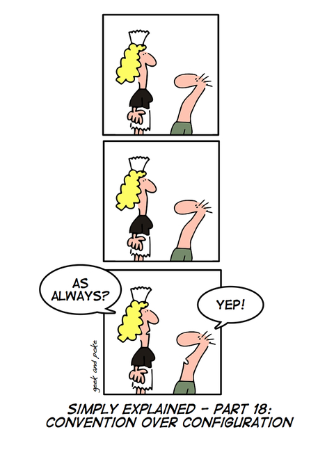

Ruby
Ruby on Rails
and BDD
Created by BB and SS
Ruby
A little history
Ruby
- 1993 - 1995 - 2005
- Perl - Python - Smalltalk
- Several implementations - RubySpec
- Happy and Productive Programmers
Ruby Semantics and Syntax
Starting from scratch.
Going deep...
- Fully Object Oriented
- Interpreted
- Strongly typed with dynamic types
- Duck typing
- Succint and flexible syntax
Hello World
puts 'Hello World'>> Hello World
Conventions
- Classes
- variables
- CONSTANTS
IRB
Interactive Ruby Shell

RubyGems
Centralized package management.
Ruby on Rails
Web development that doesn't hurt

The framework
- MVC Architecture
- Active Record Pattern

Convention over configuration
Convention over configuration
- Table names
- Foreign Keys
- Routing
- Templates
- Generators
Convention over configuration
Doing the configuration
class Post < ActiveRecord::Base
set_table_name 'news'
has_many :comments, class_name: 'Comentario',
primary_key: 'news_id'
endFollowing the convention
class Post < ActiveRecord::Base
has_many :comments
end
Don't Repeat Yourself
Every piece of knowledge must have a single, unambiguous, authoritative representation within a system
Scaffolding
$ rails generate scaffold Post title description:text date:date
$ rake db:migrate
$ rails serverREST
| Resource | GET | PUT | POST | DELETE |
|---|---|---|---|---|
http://url.com/resources |
List the URIs. | Replace the entire collection with another collection. | Create a new entry in the collection. | Delete the entire collection. |
http://url.com/resources/item17 |
Retrieve a representation of the addressed member of the collection. | Replace the addressed member of the collection, or if it doesn't exist, create it. | Not generally used. | Delete the addressed member of the collection. |
versus
- getUsers()
- getNewUsersSince(date SinceDate)
- savePurchaseOrder(string CustomerID, string PurchaseOrderID)
The View
-
HTML
-
ERB
<p> Welcome, <%= user.name %> </p>
-
Haml
%p= "Welcome, #{user.name}" -
Slim
p "Welcome, #{user.name}"
-
ERB
- JSON
- XML
Bundler

Gemfile
source 'https://rubygems.org'
gem 'rails', '3.0.0.rc'
gem 'rack-cache'
gem 'nokogiri', '~> 1.4.2'Deployment
Behavior Driven Development
Cucumber & RSpec
What is BDD?
BDD is a second-generation, outside-in, pull-based, multiple-stakeholder, multiple-scale, high-automation, agile methodology. It describes a cycle of interactions with well-defined outputs, resulting in the delivery of working, tested software that matters.
BDD
- Acceptance tests
- Business value
- Gherkin
- Natural Language
Gherkin Example
Feature: Division
In order to avoid silly mistakes
Cashiers must be able to calculate a fraction
Scenario: Regular numbers
Given I have entered 3 into the calculator
And I have entered 2 into the calculator
When I press divide
Then the result should be 1.5 on the screenGherkin Example
Before do
@calc = Calculator.new
end
After do
end
Given /I have entered (\d+) into the calculator/ do |n|
@calc.push n.to_i
end
When /I press (\w+)/ do |op|
@result = @calc.send op
end
Then /the result should be (.*) on the screen/ do |result|
@result.should == result.to_f
endRSpec
RSpec is a Behavior-Driven Development tool for Ruby programmers. RSpec helps you do the TDD part of BDD, focusing on the documentation and design aspects of TDD.
RSpec
Express some basic desired behavior
# bowling_spec.rb
require 'bowling'
describe Bowling, "#score" do
it "returns 0 for all gutter game" do
bowling = Bowling.new
20.times { bowling.hit(0) }
expect(bowling.score).to eq(0)
end
endRSpec
Run the example and watch it fail
$ rspec bowling_spec.rb
./bowling_spec.rb:4:
uninitialized constant BowlingRSpec
Write enough code to make it pass
# bowling.rb
class Bowling
def hit(pins)
end
def score
0
end
endRSpec
Run the example again and enjoy that it's passing
$ rspec bowling_spec.rb --format nested
Bowling#score
returns 0 for all gutter game
Finished in 0.007534 seconds
1 example, 0 failuresBDD Explained